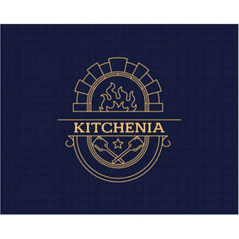

Trade Mark Journal No.2025/033 15 August 2025
UK00004207436 22 May 2025 (11,35)

- Class 11
- Lighting installations; lights for vehicles; indoor and outdoor lighting installations; heating installations; central heating boilers; boilers for heating installations; radiators [heating]; heat exchangers, not parts of machines; stoves; kitchen stoves; solar thermal collectors [heating]; Steam, gas and fog generators; steam boilers, other than parts of machines; acetylene generators; oxygen generators; nitrogen generators; Installations for air-conditioning and ventilating; Cooling installations; freezers; Electric and gas-powered devices, installations and apparatus for cooking, drying and boiling; cookers; electric cooking pots; electric water heaters; barbecues; electric laundry driers; hair driers; hand drying apparatus; Sanitary installations; taps [faucets]; shower installations; toilets [water-closets]; shower and bathing cubicles; bath tubs; toilet seats; sinks; wash-hand basins [parts of sanitary installations]; washers for water taps; stuffings (tap valves); Water softening apparatus; water purification apparatus; water purification installations; waste water purification installations; Electric bed warmers and electric blankets, not for medical use; electric pillow warmers; electric or non-electric footwarmers; hot water bottles; electrically heated socks; Filters for aquariums and aquarium filtration apparatus; Industrial type installations for cooking, drying and cooling purposes; Pasteurizers; sterilizers. .
- Class 35
- Advertising; marketing; public relations; organization of exhibitions and trade fairs for commercial or advertising purposes; Design of advertising materials; provision of an online marketplace for buyers and sellers of goods and services; Office functions; secretarial services; arranging newspaper subscriptions for others; compilation of statistics; rental of office machines; systemization of information into computer databases; telephone answering for unavailable subscribers; Business management; business administration; business consultancy; accounting; commercial consultancy services; personnel recruitment; personnel placement; employment agencies; import-export agencies; temporary personnel placement services; Auctioneering; The bringing together, for the benefit of others, of a variety of goods, namely, Lighting installations, lights for vehicles, indoor and outdoor lighting installations, heating installations, central heating boilers, boilers for heating installations, radiators [heating], heat exchangers, not parts of machines, stoves, kitchen stoves, solar thermal collectors [heating], Steam, gas and fog generators, steam boilers, other than parts of machines, acetylene generators, oxygen generators, nitrogen generators, Installations for air-conditioning and ventilating, Cooling installations, freezers, Electric and gas-powered devices, installations and apparatus for cooking, drying and boiling, cookers, electric cooking pots, electric water heaters, barbecues, electric laundry driers, hair driers, hand drying apparatus, Sanitary installations, taps [faucets], shower installations, toilets [water-closets], shower and bathing cubicles, bath tubs, toilet seats, sinks, washhand basins [parts of sanitary installations], washers for water taps, stuffings (tap valves), Water softening apparatus, water purification apparatus, water purification installations, waste water purification installations, Electric bed warmers and electric blankets, not for medical use, electric pillow warmers, electric or non-electric footwarmers, hot water bottles, electrically heated socks, Filters for aquariums and aquarium filtration apparatus, Industrial type installations for cooking, drying and cooling purposes, Pasteurizers, sterilizers, enabling customers to conveniently view and purchase those goods, such services may be provided by retail stores, wholesale outlets, by means of electronic media or through mail order catalogues.
CE PRODÜKSIYON VE DAYANIKLI TÜKETIM MALLARI SANAYI DIS TICARET LIMITED SIRKETI
Representative: Joost Muylle